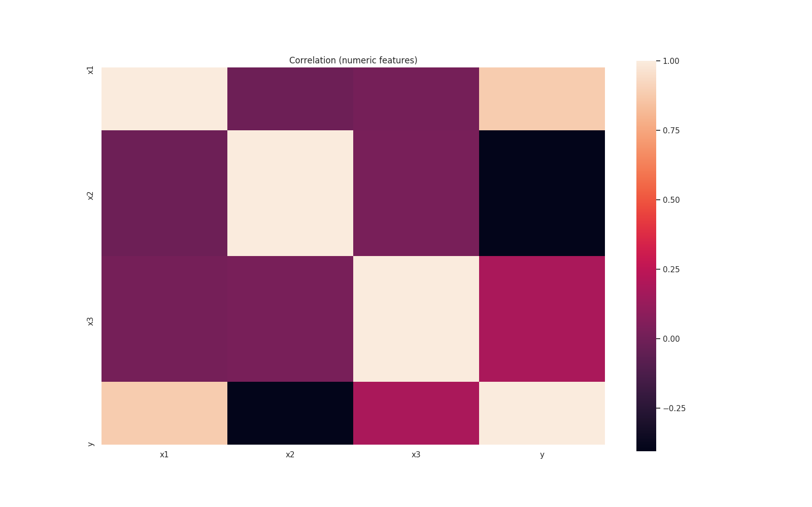
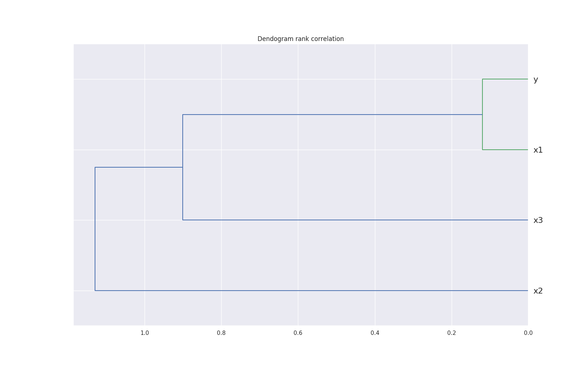
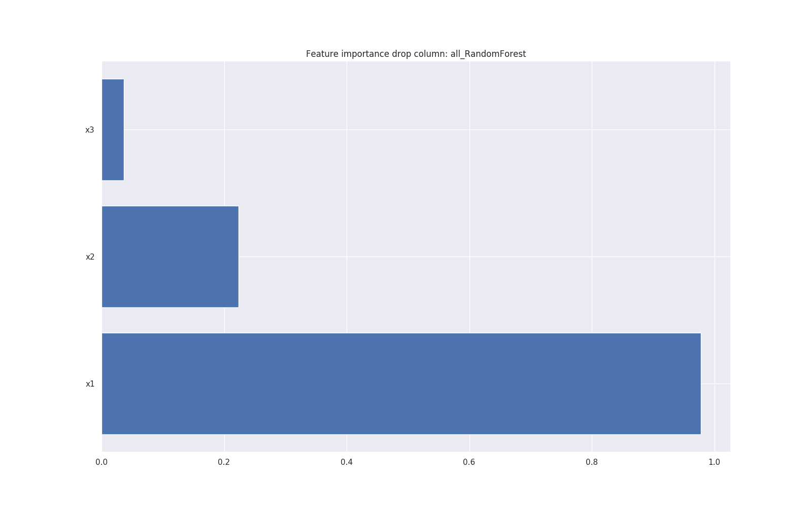
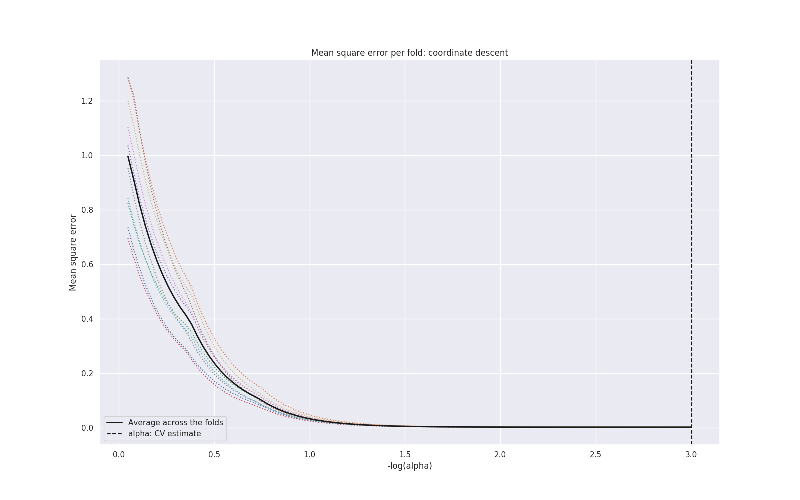
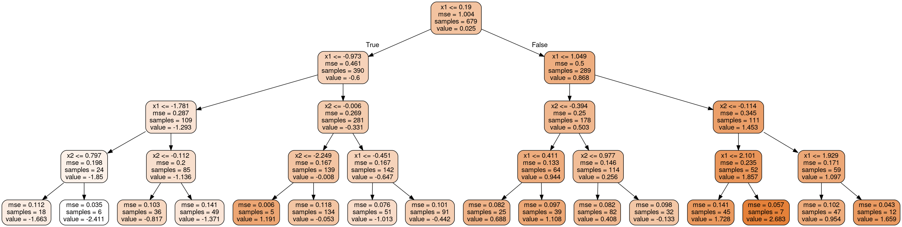

Introduction
In this introduction, we show an example on how to run LogMl from the command line
Running from command line
In order to run this example, you'll need to
- Copy the dataset to your LogMl install directory
- Copy the configuration file to your LogMl install directory
- Run LogMl
Set up environment variables
In the rest of the examples, we assume that the following variables are set to the corresponding directories:
# I checked out LogMl GitHub repository to $HOME/workspace/LogMl
# You need to change this variable accordingly
LOGML_SRC="$HOME/workspace/LogMl"
# I installed LogMl in the default directory: $HOME/logml
# You need to change this variable accordingly
LOGML_INSTALL="$HOME/logml"
Copy dataset file
The dataset in this example consists of three normally distributed variables (x1, x2, x3) and some random noise (n), the output variable (y) is calculated as:
y = 2 * x1 - 1 * x2 + 0.5 * x3 + 0.1 * n
The file data/intro/intro.csv (from GitHub repository) is a CSV file with 1,000 samples from the above equation.
Copy the file to your logml directory
# Create data directory
cd $LOGML_INSTALL
mkdir -p data/intro
# Copy dataset file from the source directory.
cp $LOGML_SRC/data/intro/intro.csv data/intro/intro.csv
Copy configuration file
The YAML configuraton file for this example, is in GitHub's repository config/intro.yaml, you can copy it to the logml directory
cd $LOGML_INSTALL
mkdir -p config
cp $LOGML_SRC/config/intro.yaml config/
Running LogMl
To run LogMl, you just need to invoke LogMl with the propper configuration file
# Activate virtual environment
cd $LOGML_INSTALL
. ./bin/activate
# Run LogMl
./src/logml.py -c config/intro.yaml
Results
The output includes:
Results: Dataset exploration
Show dataset (head & tail)
| idx | x1 | x2 | x3 | y |
|---|---|---|---|---|
| 1 | 0.977291 | 0.247040 | 0.272578 | 0.772232 |
| 2 | 1.261573 | -0.090584 | -0.386493 | 1.036706 |
| 3 | 0.442205 | -1.059191 | 0.877819 | 0.986426 |
| 4 | -1.353664 | -0.310002 | 1.697421 | -0.672185 |
| 5 | 0.744831 | 0.750820 | 0.754703 | 0.448015 |
Variables statistics (including normally analysis)
| variable | x1 |
|---|---|
| count | 853 |
| mean | 1.77011e-17 |
| std | 1.00059 |
| min | -3.17445 |
| 25% | -0.689298 |
| 50% | -0.0406822 |
| 75% | 0.663965 |
| max | 2.74289 |
| unique | 853 |
| skewness | 0.0353077 |
| kurtosis | -0.192718 |
| Normality | True |
| Normality_test_pvalue | 0.465024 |
| Log_Normality | False |
| Log_Normality_test_pvalue | 0 |
Variables distributions

Pairs plots

Correlation analysis

Correlation dendogram

Feature importance
Feature importance: Model based
RandomForest, ExtraTrees, GradientBoosting. Using drop column and permutation analysis

Feature importance: Regression models

Feature importance: Tree desition graph

Feature importance: Weighted rank sum of all methods
| variable | importance_permutation_RandomForest | ... | importance_dropcol_RandomForest | ... | ranks_sum | rank_of_ranksum |
|---|---|---|---|---|---|---|
| x1 | 73.424 | ... | 50.154 | ... | 134.99 | 1.0 |
| x2 | 16.635 | ... | 11.455 | ... | 269.99 | 2.0 |
| x3 | 2.723 | ... | 1.856 | ... | 404.98 | 3.0 |
Model search
Model search with hyper-parameter tuning
Summary of all models, ranked by validation performance
| Model | train | validation | time |
|---|---|---|---|
| sklearn.linear_model.TheilSenRegressor.20200104.020150.141139.143 | 0.0017 | 0.00144 | 0.89 |
| sklearn.linear_model.LassoCV.20200104.020155.308599.151 | 0.0017 | 0.00145 | 0.05 |
| sklearn.svm.LinearSVR.20200104.020005.137177.30 | 0.0017 | 0.00145 | 0.02 |
| sklearn.linear_model.ARDRegression.20200104.020005.196092.32 | 0.0017 | 0.00146 | 3.88 |
| sklearn.linear_model.BayesianRidge.20200104.020004.916091.22 | 0.0017 | 0.00146 | 0.01 |
| sklearn.linear_model.Lars.20200104.020510.961392.460 | 0.0017 | 0.00146 | 0.00 |
| sklearn.linear_model.LinearRegression.20200104.020006.495526.34 | 0.0017 | 0.00146 | 0.01 |
| sklearn.linear_model.OrthogonalMatchingPursuit.20200104.020004.965360.24 | 0.0017 | 0.00146 | 0.01 |
| sklearn.linear_model.RANSACRegressor.20200104.020155.257481.149 | 0.0017 | 0.00146 | 0.01 |
| sklearn.linear_model.HuberRegressor.20200104.020155.202713.147 | 0.0017 | 0.00147 | 0.01 |
| sklearn.ensemble.GradientBoostingRegressor.20200104.020331.408829.326 | 0.0035 | 0.00698 | 0.54 |
| sklearn.ensemble.GradientBoostingRegressor.20200104.020333.410398.328 | 0.0048 | 0.00781 | 0.72 |
| sklearn.ensemble.GradientBoostingRegressor.20200104.020337.272208.333 | 0.0036 | 0.00841 | 0.45 |
| sklearn.linear_model.RidgeCV.20200104.020150.046718.139 | 0.0098 | 0.00926 | 0.01 |
| sklearn.ensemble.GradientBoostingRegressor.20200104.020309.050059.304 | 0.0029 | 0.01083 | 0.98 |
| ... | |||
| sklearn.ensemble.GradientBoostingRegressor.20200104.020251.214883.275 | 1.0007 | 1.00914 | 0.51 |
| sklearn.linear_model.Lasso.20200104.020155.407230.153 | 1.0 | 1.01526 | 0.00 |
| sklearn.dummy.DummyRegressor.20200104.020004.830997.18 | 1.0 | 1.01526 | 0.01 |